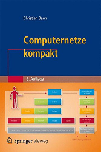

|
|
Wechseln Sie zur Seite in englischer Sprache
|
|  |
Computernetze ermöglichen den Zusammenschluss eigenständiger Computersysteme zur Kommunikation und gemeinsamen Nutzung von Ressourcen. Die Kommunikation in Computernetzen erfolgt über verschiedene Protokolle, die über verschiedene Schichtenmodelle (OSI-Referenzmodell, TCP/IP-Referenzmodell, hybrides Modell) strukturiert werden können. Zu Beginn der Vorlesung findet eine Einführung in die nötigen Grundlagen der Informatik und der Computernetze statt. Danach werden die Protokolle und ihre Klassifikation in die etablierten Referenzmodelle besprochen. Der Schwerpunkt dieser Vorlesung ist die Beschreibung des Transports von Daten durch die unterschiedlichen Protokollebenen und Übertragungsmedien. Die komplette Vorlesung (inkl. Übungen und Klausur) findet in englischer Sprache statt. Alle Vorlesungsunterlagen liegen mit identischem Inhalt in deutscher und englischer Sprache vor. Eine Übersicht über die verwendeten Fachbegriffe enthält diese Seite. Die Vorlesungsunterlagen sind die Grundlage für die 3. Auflage des Buches Computernetze kompakt, das im September 2015 bei Springer Vieweg erschienen ist. ISBN: 978-3-662-46931-6 |
|
Diese Seite ist veraltet!
Aktualisierte und verbesserte Vorlesungsunterlagen befinden sich auf der Seite Computernetze im WS1819. |
| Datum | Zeit | Raum | Veranstaltung | Zug | Inhalte |
|---|---|---|---|---|---|
| 18.10.2017 | 11:45-13:15 | 1-131 | Vorlesung | I3a | Besprechung von Foliensatz 1 (Folien 1-32) |
| 25.10.2017 | 11:45-13:15 | 1-131 | Vorlesung | I3a | Besprechung von Foliensatz 1 (Folien 33-49) + Foliensatz 2 (Folien 1-12) |
| 01.11.2017 | 11:45-13:15 | 1-131 | Vorlesung | I3a | Besprechung von Foliensatz 2 (Folien 13-42) |
| 08.11.2017 | 11:45-13:15 | 1-131 | Vorlesung | I3a | Besprechung von Foliensatz 2 (Folien 43-52) + Foliensatz 3 + Foliensatz 4 (Folien 1-20) |
| 15.11.2017 | Die Vorlesung kann wegen einer Fortbildung in Fulda nicht stattfinden. | ||||
| 22.11.2017 | 11:45-13:15 | 1-131 | Vorlesung | I3a | Besprechung von Foliensatz 4 (Folien 21-29) + Foliensatz 5 (Folien 1-17) |
| 29.11.2017 | Die Vorlesung kann wegen dem Hochschultag "Dialog Lehre" nicht stattfinden. | ||||
| 06.12.2017 | 11:45-13:15 | 1-131 | Vorlesung | I3a | Besprechung von Foliensatz 5 (Folien 18-38) + Foliensatz 6 (Folien 1-9) |
| 13.12.2017 | 11:45-13:15 | 1-131 | Vorlesung | I3a | Besprechung von Foliensatz 6 (Folien 10-36) + Foliensatz 7 (Folien 1-9) |
| 20.12.2017 | 11:45-13:15 | 1-131 | Vorlesung | I3a | Besprechung von Foliensatz 7 (Folien 10-42) |
| 27.12.2017 | Weihnachtsferien | ||||
| 02.01.2018 | Weihnachtsferien | ||||
| 10.01.2018 | 11:45-13:15 | 1-131 | Vorlesung | I3a | Besprechung von Foliensatz 7 (Folien 43-50) + Foliensatz 8 (Folien 1-29) |
| 17.01.2018 | 11:45-13:15 | 1-131 | Vorlesung | I3a | Besprechung von Foliensatz 8 (Folien 30-58) + Foliensatz 9 (Folien 1-14) |
| 24.01.2018 | 11:45-13:15 | 1-131 | Vorlesung | I3a | Dieser Termin kann wegen eines Unfalls nicht stattfinden. |
| 31.01.2018 | 11:45-13:15 | 1-131 | Vorlesung | I3a | Dieser Termin kann wegen einer Erkrankung nicht stattfinden. |
| 07.02.2018 | 11:45-13:15 | 1-131 | Vorlesung | I3a | Besprechung von Foliensatz 9 (Folien 15-49) |
| 23.02.2018 | 10:00-11:30 | 9-30[1-4] | Klausur | I3a | Die Klausur deckt alle besprochenen Foliensätze und Übungsblätter ab |
| 25.05.2018 | 16:00-17:30 | BCN 331 | Klausur | I3a | Die Klausur deckt alle besprochenen Foliensätze und Übungsblätter ab |
| Inhalte | |
|---|---|
| Foliensatz 1 | Organisatorisches, Grundlagen der Computervernetzung, Protokolle und Referenzmodelle |
| Foliensatz 2 | Bitübertragungsschicht (Teil 1) |
| Foliensatz 3 | Bitübertragungsschicht (Teil 2) |
| Foliensatz 4 | Sicherungsschicht (Teil 1) |
| Foliensatz 5 | Sicherungsschicht (Teil 2) |
| Foliensatz 6 | Sicherungsschicht (Teil 3) |
| Foliensatz 7 | Vermittlungsschicht (Teil 1) |
| Foliensatz 8 | Vermittlungsschicht (Teil 2) |
| Foliensatz 9 | Transportschicht |
| Foliensatz 10 | Anwendungsschicht |
| Foliensatz 11 | Kryptologie (Grundbegriffe, Symmetrische Verfahren) |
| Foliensatz 12 | Kryptologie (Asymmetrische Verfahren, Schlüsselverteilung, Hashfunktionen) |
| Foliensatz 13 | Steganographie, Plagiatsfallen und Wasserzeichen |
| Inhalte | |
|---|---|
| Übungsblatt 1 | Foliensatz 1 |
| Übungsblatt 2 | Foliensatz 2 + 3 |
| Übungsblatt 3 | Foliensatz 4 + 5 + 6 |
| Übungsblatt 4 | Foliensatz 7 + 8 |
| Übungsblatt 5 | Foliensatz 9 + 10 |
| Übungsblatt 6 | Foliensatz 11 + 12 + 13 |
| Laboraufgaben | Inhalte | |
|---|---|---|
| Laboraufgabe 1 | Installation einer Testumgebung, erste Schritte mit Wireshark, Referenzmodelle, DHCP, DNS, ping, traceroute | |
| Laboraufgabe 2 | Aufbau einer komplexen virtuellen Infrastuktur, IP-Forwarding, Analyse von ARP und ICMP mit Wireshark | |
| Laboraufgabe 3 | Konfiguration eines DHCP-Servers und eines DNS-Servers, Konfiguration eines Clusters aus Web-Servern mit Lastverteilung, Analyse von HTTP-Datenverkehr mit Wireshark |
| Semester | Klausuren | Bearbeitungszeit | Hochschule | Lösungen | ||
|---|---|---|---|---|---|---|
| WS1718 | 90 Minuten | Frankfurt UAS | ||||
| SS2017 | 90 Minuten | Frankfurt UAS | ||||
| WS1617 | 90 Minuten | Frankfurt UAS | ||||
| SS2016 | 90 Minuten | Frankfurt UAS | ||||
| WS1516 | 90 Minuten | Frankfurt UAS | ||||
| SS2015 | 90 Minuten | Frankfurt UAS | ||||
| WS1415 | 90 Minuten | FH Frankfurt | ||||
| SS2014 | 90 Minuten | FH Frankfurt | ||||
| WS1314 | 90 Minuten | FH Frankfurt | ||||
| SS2012 | 90 Minuten | HS Darmstadt | ||||
| Ergebnis der Klausur im SS2018 |
| Ergebnis der Klausur im WS1718 |
Zu erreichen bin ich am besten per E-Mail: christianbaun@fb2.fra-uas.de
|
Prof. Dr. Christian Baun Frankfurt University of Applied Sciences (1971-2014: Fachhochschule Frankfurt am Main) FB 2: Informatik und Ingenieurwissenschaften Stand: 4.6.2018 |